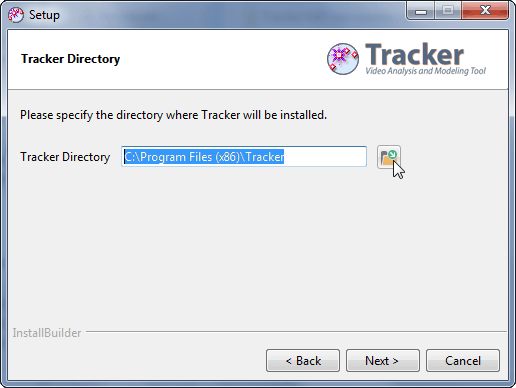
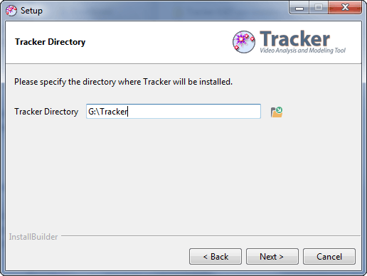

Tracker Home | Help | Share | OSP Home
To install Tracker on the portable drive:
- Create a "Tracker" directory on the portable drive.
- In the Tracker Directory screen of the installer, click the open file button, navigate to the portable Tracker directory and click OK.
- Complete the installation as usual.

To run Tracker from the portable drive, double-click the Tracker.exe file (Tracker icon) in the portable Tracker directory.
To install Tracker on the portable drive:
- Install Tracker on a host computer.
- Copy the file /Applications/Tracker.app (Tracker icon) to the portable drive.
To run Tracker from the portable drive, double-click the Tracker.app file (Tracker icon) on the portable drive.
To install Tracker on the portable drive:
- Create a "Tracker" directory on the portable drive.
- In the Tracker Directory screen of the installer, click the open file button, navigate to the portable Tracker directory and click OK.
- Complete the installation as usual.
To run Tracker from the portable drive, double-click the Tracker.sh file (Tracker icon) in the portable Tracker directory.